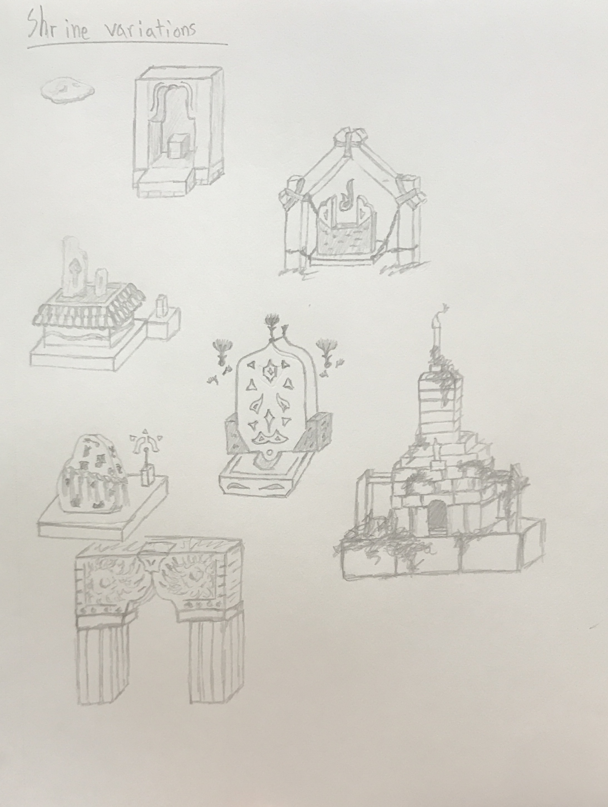
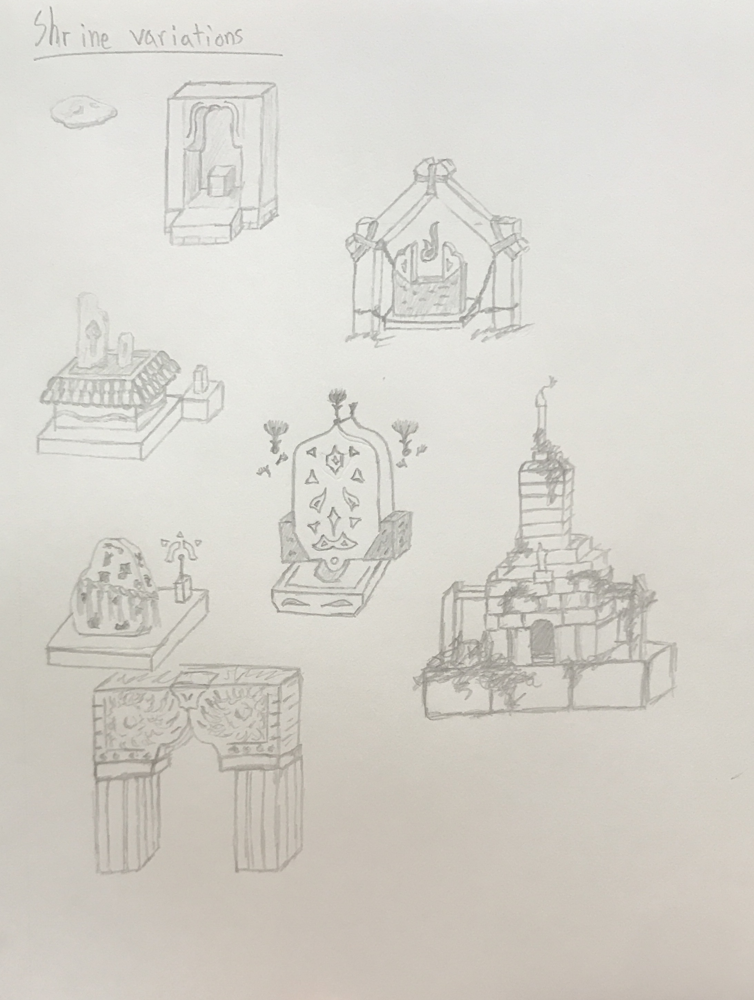
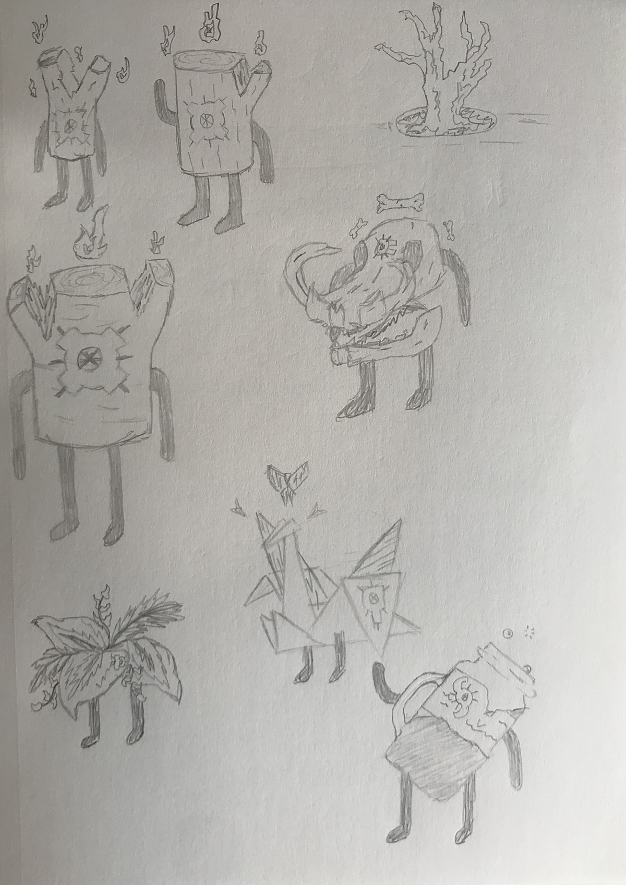
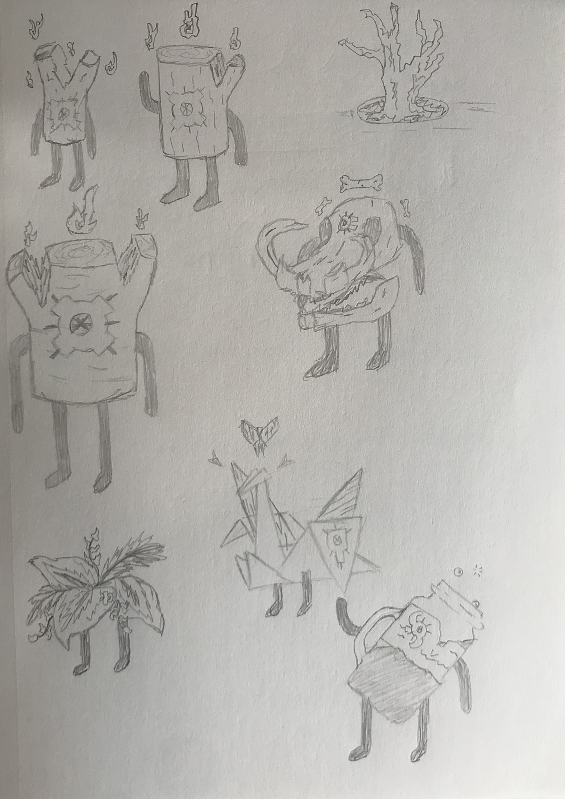

Text styles
~ Kefa Bold ~
Default font (used everywhere)
Italic for emphasis
~ Sanctus ~
Special font/alphabet (only in certain areas)
![[image of all the Sanctus characters]](characters.png)
Colour scheme
~ Base colours ~
Dust (#e6d0b3) (backgrounds)
Terracotta (#a66659) (midtones)
Dark Terracotta (#633d36) (foreground)
~ Highlight colours ~
Seafoam (#9cc9a3) (main highlights)
Silica (#598ca6) (secondary highlights)
Crimson (#ff1500) (accents around Dark Terracotta)
Gold (#ffd500) (bright spots)
~ Colour rules ~
1. Highlight colours must always be placed on top of Dark Terracotta
2. Highlight colours must never touch themselves
3. Gold colour should only be used for interactable objects or for things that could be made of gold
4. Base colour order must never be subverted
5. Seafoam colour has higher priority than Silica colour
6. Dark Terracotta is almost always rimmed with a line of Crimson
Logo design
Graphics
~ Spirit type/class symbols ~
![[image of the spirit type/class combinations]](symbols.png)
~ Sketches ~
![[sketch5]](sketch5.jpg) 

![[sketch2]](sketch2.jpg) 

![[sketch1]](sketch1.jpg)
![[sketch4]](sketch4.jpg)
UI design
![[ui examples]](ui_all.png)
![[game screen example]](screen1.png)
![[game screen example]](screen2.png)
![[game screen example]](screen3.png)
![[ui layout example]](ui1.png)
![[ui layout example]](ui2.png)